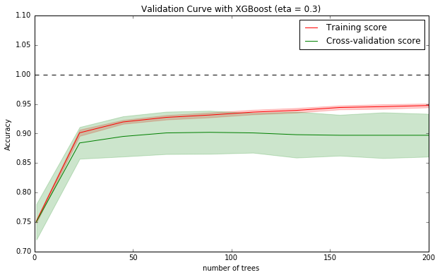
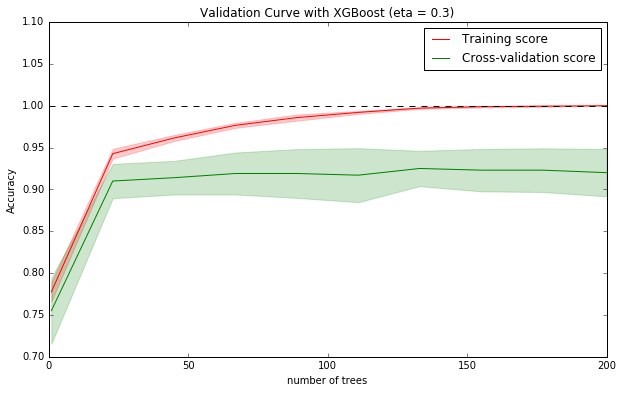

Spotting Most Important Features
The following notebook presents how to distinguish the relative importance of features in the dataset.
Using this knowledge will help you to figure out what is driving the splits most for the trees and where we may be able to make some improvements in feature engineering if possible.
What we’ll be doing:
- loading libraries and data,
- training a model,
- knowing how a tree is represented,
- plotting feature importance
Load libraries
The purpose of this step is to train simple model.
Let’s begin with loading all libraries in one place.
1 | %matplotlib inline |
/opt/conda/lib/python3.5/site-packages/IPython/html.py:14: ShimWarning: The `IPython.html` package has been deprecated. You should import from `notebook` instead. `IPython.html.widgets` has moved to `ipywidgets`.
"`IPython.html.widgets` has moved to `ipywidgets`.", ShimWarning)
Load data
Load agaricus dataset from file
1 | dtrain = xgb.DMatrix('../data/agaricus.txt.train') |
Train the model
Specify training parameters - we are going to use 5 stump decision trees with average learning rate.
1 | # specify training parameters |
Train the model. In the same time specify watchlist to observe it’s performance on the test set.
1 | # see how does it perform |
[0] test-error:0.11049 train-error:0.113926
[1] test-error:0.11049 train-error:0.113926
[2] test-error:0.03352 train-error:0.030401
[3] test-error:0.027312 train-error:0.021495
[4] test-error:0.031037 train-error:0.025487
Representation of a tree
Before moving on it’s good to understand the intuition about how trees are grown.
While building a tree is divided recursively several times (in this example only once) - this operation is called split. To perform a split the algorithm must figure out which is the best (one) feature to use.
After that, at the bottom of the we get groups of observations packed in the leaves.
In the final model, these leafs are supposed to be as pure as possible for each tree, meaning in our case that each leaf should be made of one label class.
Not all splits are equally important. Basically the first split of a tree will have more impact on the purity that, for instance, the deepest split. Intuitively, we understand that the first split makes most of the work, and the following splits focus on smaller parts of the dataset which have been missclassified by the first tree.
In the same way, in Boosting we try to optimize the missclassification at each round (it is called the loss). So the first tree will do the big work and the following trees will focus on the remaining, on the parts not correctly learned by the previous trees.
The improvement brought by each split can be measured, it is the gain.
~ Quoted from the Kaggle Tianqi Chen’s Kaggle notebook.
Let’s investigate how trees look like on our case:
1 | trees_dump = bst.get_dump(fmap='../data/featmap.txt', with_stats=True) |
0:[odor=pungent] yes=2,no=1,gain=4000.53,cover=1628.25
1:leaf=0.647758,cover=924.5
2:leaf=-0.93331,cover=703.75
0:[odor=musty] yes=2,no=1,gain=1377.22,cover=1404.2
1:leaf=-0.339609,cover=1008.21
2:leaf=0.75969,cover=395.989
0:[gill-size=narrow] yes=2,no=1,gain=1210.77,cover=1232.64
1:leaf=0.673358,cover=430.293
2:leaf=-0.365203,cover=802.35
0:[stalk-surface-above-ring=smooth] yes=2,no=1,gain=791.959,cover=1111.84
1:leaf=-0.277529,cover=765.906
2:leaf=0.632881,cover=345.937
0:[odor=pungent] yes=2,no=1,gain=493.704,cover=981.683
1:leaf=0.275961,cover=638.373
2:leaf=-0.46668,cover=343.31
For each split we are getting the following details:
- which feature was used to make split,
- possible choices to make (branches)
- gain which is the actual improvement in accuracy brough by that feature. The idea is that before adding a new split on a feature X to the branch there was some wrongly classified elements, after adding the split on this feature, there are two new branches, and each of these branch is more accurate (one branch saying if your observation is on this branch then it should be classified as 1, and the other branch saying the exact opposite),
- cover measuring the relative quantity of observations concerned by that feature
Plotting
Hopefully there are better ways to figure out which features really matter. We can use built-in function plot_importance that will create a plot presenting most important features due to some criterias. We will analyze the impact of each feature for all splits and all trees and visualize results.
See which feature provided the most gain:
1 | xgb.plot_importance(bst, importance_type='gain', xlabel='Gain') |
<matplotlib.axes._subplots.AxesSubplot at 0x7f388d603f28>

We can simplify it a little bit by introducing a F-score metric.
F-score - sums up how many times a split was performed on each feature.
1 | xgb.plot_importance(bst) |
<matplotlib.axes._subplots.AxesSubplot at 0x7f388d59a438>

In case you want to visualize it another way, a created model enables convinient way of accessing the F-score.
1 | importances = bst.get_fscore() |
{'f27': 1, 'f29': 2, 'f39': 1, 'f64': 1}
Now you can manipulate data in your own way
1 | # create df |
<matplotlib.axes._subplots.AxesSubplot at 0x7f388d4d4048>

Bias/variance trade-off
The following notebook presents visual explanation about how to deal with bias/variance trade-off, which is common machine learning problem.
What you will learn:
- what is bias and variance in terms of ML problem,
- concept of under- and over-fitting,
- how to detect if there is a problem,
- dealing with high variance/bias
Bias and variance
There are two general types of errors made by classifiers - bias and variance errors.
Bias error is the overall difference between expected predictions made by the model and true values.
Variance error describes how much predictions for the given point vary.
The desired state is when both errors are as low as possible. The graphics taken from Scott Fortmann-Roe’s blog visualizes the issue really well. Imagine that the center of the target is the perfect model. We are iteratively repeating our experiment, recreating model and using it on the same data points.

Underfitting and overfitting
Knowing the errors introduced with bias and variance we can proceed to how these relate to training the model. We will use the plot taken from scikit-learn docs to help us visualize the underfitting and overfitting issues.
This simple example tries to fit a polynomial regression to predict future price. It’s obious to see that for $d=1$ the model is too simple (underfits the data), and for $d=6$ is just the opposite (overfitting).
For underfitting we say that model suffers from high bias (too simple) (low variance)
For overfitting we say that model suffers from high variance (over-complicated, unstable) (low bias)
How to detect it
To quantify the effects described we are going to train the model couple times for choosing different parameters value. Let’s consider that we would like to find a optimal number of trees - we don’t want the model to be very simple, but we also don’t want to over-complicate it.
The plan is as follows, we will:
- generate complicated binary classification dataset,
- use Scikit-learn wrapper,
- train the model for different values of trees (
n_estimators)) using stratified 10-fold CV, - plot train/test errors
Begin with loading required libraries and setting random seed number
1 | %matplotlib inline |
Now generate artificial dataset
1 | X, y = make_classification(n_samples=1000, n_features=20, n_informative=8, n_redundant=3, n_repeated=2, random_state=seed) |
We will divide into 10 stratified folds (the same distibution of labels in each fold) for testing
1 | cv = StratifiedKFold(y, n_folds=10, shuffle=True, random_state=seed) |
Let’s check how the number of trees influence the predictions accuracy.
1 | default_params = { |
Show the validation curve plot
1 | train_scores_mean = np.mean(train_scores, axis=1) |

Best cross-validation result (0.90) obtained for 89 trees
Looking at the plot we can draw the following conclusions:
- training score keeps growing while adding new trees, but from a certain point CV score is fixed
- variance is lowest, and bias is high for less than 25 trees,
- from about 25 trees, the variance is getting higher and while the CV score bias is holding steady (there is no point for adding extra trees / complexity)
- we can see that the model is quite stable keeping variance fixed when increasing it’s complexity
We can assume that the trade-off for our model will be met at n_estimators = 50. The variance is still to big.
What we can do?
Dealing with high variance
If model is too complex try:
- using less features (ie. feature selection),
- using more training samples (ie. artificially generated),
- increasing regularization (add penalties for extra complexity)
In XGBoost you can try to:
- reduce depth of each tree (
max_depth), - increase
min_child_weightparameter, - increase
gammaparameter, - add more randomness using
subsample,colsample_bytreeparameters, - increase
lambdaandalpharegularization parameters
Dealing with high bias
If model is too simple:
- add more features (ie. better feature engineering),
- more sophisticated model
- decrease regularization
In XGBoost you can do it by:
- increase depth of each tree (
max_depth), - decrease
min_child_weightparameter, - decrease
gammaparameter, - decrease
lambdaandalpharegularization parameters
Let’s try to tweak a parameters a little bit. We are going to add some randomness - each tree we will use 70% randomly chosen samples and 60% randomly chosen features. This should help to reduce a variance. To decrease the bias (bigger accuracy) try adding an extra level to each tree.
1 | default_params = { |
1 | train_scores_mean = np.mean(train_scores, axis=1) |

Best cross-validation result (0.92) obtained for 133 trees
We have obtained slightly less variance and decreased bias.

Hyper-parameter tuning
As you know there are plenty of tunable parameters. Each one results in different output. The question is which combination results in best output.
The following notebook will show you how to use Scikit-learn modules for figuring out the best parameters for your models.
What’s included:
- data preparation,
- finding best hyper-parameters using grid-search,
- finding best hyper-parameters using randomized grid-search
Prepare data
Let’s begin with loading all required libraries in one place and setting seed number for reproducibility.
1 | import numpy as np |
Generate artificial dataset:
1 | X, y = make_classification(n_samples=1000, n_features=20, n_informative=8, n_redundant=3, n_repeated=2, random_state=seed) |
Define cross-validation strategy for testing. Let’s use StratifiedKFold which guarantees that target label is equally distributed across each fold:
1 | cv = StratifiedKFold(y, n_folds=10, shuffle=True, random_state=seed) |
Grid-Search
In grid-search we start by defining a dictionary holding possible parameter values we want to test. All combinations will be evaluted.
1 | params_grid = { |
Add a dictionary for fixed parameters.
1 | params_fixed = { |
Create a GridSearchCV estimator. We will be looking for combination giving the best accuracy.
1 | bst_grid = GridSearchCV( |
Before running the calculations notice that $343*10=360$ models will be created to test all combinations. You should always have rough estimations about what is going to happen.
1 | bst_grid.fit(X, y) |
GridSearchCV(cv=sklearn.cross_validation.StratifiedKFold(labels=[0 1 ..., 1 1], n_folds=10, shuffle=True, random_state=342),
error_score='raise',
estimator=XGBClassifier(base_score=0.5, colsample_bylevel=1, colsample_bytree=1,
gamma=0, learning_rate=0.1, max_delta_step=0, max_depth=3,
min_child_weight=1, missing=None, n_estimators=100, nthread=-1,
objective='binary:logistic', reg_alpha=0, reg_lambda=1,
scale_pos_weight=1, seed=342, silent=1, subsample=1),
fit_params={}, iid=True, n_jobs=1,
param_grid={'n_estimators': [5, 10, 25, 50], 'learning_rate': array([ 1.00000e-16, 5.00000e-01, 1.00000e+00]), 'max_depth': [1, 2, 3]},
pre_dispatch='2*n_jobs', refit=True, scoring='accuracy', verbose=0)
Now, we can look at all obtained scores, and try to manually see what matters and what not. A quick glance looks that the largeer n_estimators then the accuracy is higher.
1 | bst_grid.grid_scores_ |
[mean: 0.49800, std: 0.00245, params: {'learning_rate': 9.9999999999999998e-17, 'n_estimators': 5, 'max_depth': 1},
mean: 0.49800, std: 0.00245, params: {'learning_rate': 9.9999999999999998e-17, 'n_estimators': 10, 'max_depth': 1},
mean: 0.49800, std: 0.00245, params: {'learning_rate': 9.9999999999999998e-17, 'n_estimators': 25, 'max_depth': 1},
mean: 0.49800, std: 0.00245, params: {'learning_rate': 9.9999999999999998e-17, 'n_estimators': 50, 'max_depth': 1},
mean: 0.49800, std: 0.00245, params: {'learning_rate': 9.9999999999999998e-17, 'n_estimators': 5, 'max_depth': 2},
mean: 0.49800, std: 0.00245, params: {'learning_rate': 9.9999999999999998e-17, 'n_estimators': 10, 'max_depth': 2},
mean: 0.49800, std: 0.00245, params: {'learning_rate': 9.9999999999999998e-17, 'n_estimators': 25, 'max_depth': 2},
mean: 0.49800, std: 0.00245, params: {'learning_rate': 9.9999999999999998e-17, 'n_estimators': 50, 'max_depth': 2},
mean: 0.49800, std: 0.00245, params: {'learning_rate': 9.9999999999999998e-17, 'n_estimators': 5, 'max_depth': 3},
mean: 0.49800, std: 0.00245, params: {'learning_rate': 9.9999999999999998e-17, 'n_estimators': 10, 'max_depth': 3},
mean: 0.49800, std: 0.00245, params: {'learning_rate': 9.9999999999999998e-17, 'n_estimators': 25, 'max_depth': 3},
mean: 0.49800, std: 0.00245, params: {'learning_rate': 9.9999999999999998e-17, 'n_estimators': 50, 'max_depth': 3},
mean: 0.84100, std: 0.03515, params: {'learning_rate': 0.5, 'n_estimators': 5, 'max_depth': 1},
mean: 0.87300, std: 0.03374, params: {'learning_rate': 0.5, 'n_estimators': 10, 'max_depth': 1},
mean: 0.89200, std: 0.03375, params: {'learning_rate': 0.5, 'n_estimators': 25, 'max_depth': 1},
mean: 0.90200, std: 0.03262, params: {'learning_rate': 0.5, 'n_estimators': 50, 'max_depth': 1},
mean: 0.86400, std: 0.04665, params: {'learning_rate': 0.5, 'n_estimators': 5, 'max_depth': 2},
mean: 0.89400, std: 0.04189, params: {'learning_rate': 0.5, 'n_estimators': 10, 'max_depth': 2},
mean: 0.92200, std: 0.02584, params: {'learning_rate': 0.5, 'n_estimators': 25, 'max_depth': 2},
mean: 0.92000, std: 0.02233, params: {'learning_rate': 0.5, 'n_estimators': 50, 'max_depth': 2},
mean: 0.89700, std: 0.03904, params: {'learning_rate': 0.5, 'n_estimators': 5, 'max_depth': 3},
mean: 0.92000, std: 0.02864, params: {'learning_rate': 0.5, 'n_estimators': 10, 'max_depth': 3},
mean: 0.92300, std: 0.02193, params: {'learning_rate': 0.5, 'n_estimators': 25, 'max_depth': 3},
mean: 0.92400, std: 0.02255, params: {'learning_rate': 0.5, 'n_estimators': 50, 'max_depth': 3},
mean: 0.83500, std: 0.04939, params: {'learning_rate': 1.0, 'n_estimators': 5, 'max_depth': 1},
mean: 0.86800, std: 0.03386, params: {'learning_rate': 1.0, 'n_estimators': 10, 'max_depth': 1},
mean: 0.89500, std: 0.02720, params: {'learning_rate': 1.0, 'n_estimators': 25, 'max_depth': 1},
mean: 0.90500, std: 0.02783, params: {'learning_rate': 1.0, 'n_estimators': 50, 'max_depth': 1},
mean: 0.87800, std: 0.03342, params: {'learning_rate': 1.0, 'n_estimators': 5, 'max_depth': 2},
mean: 0.90800, std: 0.04261, params: {'learning_rate': 1.0, 'n_estimators': 10, 'max_depth': 2},
mean: 0.91000, std: 0.03632, params: {'learning_rate': 1.0, 'n_estimators': 25, 'max_depth': 2},
mean: 0.91300, std: 0.02449, params: {'learning_rate': 1.0, 'n_estimators': 50, 'max_depth': 2},
mean: 0.90500, std: 0.03112, params: {'learning_rate': 1.0, 'n_estimators': 5, 'max_depth': 3},
mean: 0.91700, std: 0.02729, params: {'learning_rate': 1.0, 'n_estimators': 10, 'max_depth': 3},
mean: 0.92700, std: 0.03342, params: {'learning_rate': 1.0, 'n_estimators': 25, 'max_depth': 3},
mean: 0.93300, std: 0.02581, params: {'learning_rate': 1.0, 'n_estimators': 50, 'max_depth': 3}]
If there are many results, we can filter them manually to get the best combination
1 | print("Best accuracy obtained: {0}".format(bst_grid.best_score_)) |
Best accuracy obtained: 0.933
Parameters:
learning_rate: 1.0
n_estimators: 50
max_depth: 3
Looking for best parameters is an iterative process. You should start with coarsed-granularity and move to to more detailed values.
Randomized Grid-Search
When the number of parameters and their values is getting big traditional grid-search approach quickly becomes ineffective. A possible solution might be to randomly pick certain parameters from their distribution. While it’s not an exhaustive solution, it’s worth giving a shot.
Create a parameters distribution dictionary:
1 | params_dist_grid = { |
Initialize RandomizedSearchCV to randomly pick 10 combinations of parameters. With this approach you can easily control the number of tested models.
1 | rs_grid = RandomizedSearchCV( |
Fit the classifier:
1 | rs_grid.fit(X, y) |
RandomizedSearchCV(cv=sklearn.cross_validation.StratifiedKFold(labels=[0 1 ..., 1 1], n_folds=10, shuffle=True, random_state=342),
error_score='raise',
estimator=XGBClassifier(base_score=0.5, colsample_bylevel=1, colsample_bytree=1,
gamma=0, learning_rate=0.1, max_delta_step=0, max_depth=3,
min_child_weight=1, missing=None, n_estimators=100, nthread=-1,
objective='binary:logistic', reg_alpha=0, reg_lambda=1,
scale_pos_weight=1, seed=342, silent=1, subsample=1),
fit_params={}, iid=True, n_iter=10, n_jobs=1,
param_distributions={'subsample': <scipy.stats._distn_infrastructure.rv_frozen object at 0x7ff81c63b400>, 'n_estimators': <scipy.stats._distn_infrastructure.rv_frozen object at 0x7ff827da40f0>, 'gamma': [0, 0.5, 1], 'colsample_bytree': <scipy.stats._distn_infrastructure.rv_frozen object at 0x7ff81c63b748>, 'learning_rate': <scipy.stats._distn_infrastructure.rv_frozen object at 0x7ff84c690160>, 'max_depth': [1, 2, 3, 4]},
pre_dispatch='2*n_jobs', random_state=342, refit=True,
scoring='accuracy', verbose=0)
One more time take a look at choosen parameters and their accuracy score:
1 | rs_grid.grid_scores_ |
[mean: 0.80200, std: 0.02403, params: {'subsample': 0.11676744056370758, 'n_estimators': 492, 'gamma': 0, 'colsample_bytree': 0.065034396841929132, 'learning_rate': 0.82231421953113004, 'max_depth': 3},
mean: 0.90800, std: 0.02534, params: {'subsample': 0.4325346125891868, 'n_estimators': 689, 'gamma': 1, 'colsample_bytree': 0.11848249237448605, 'learning_rate': 0.13214054942810016, 'max_depth': 1},
mean: 0.86400, std: 0.03584, params: {'subsample': 0.15239319471904489, 'n_estimators': 392, 'gamma': 0, 'colsample_bytree': 0.37621772642449514, 'learning_rate': 0.61087022642994204, 'max_depth': 4},
mean: 0.90100, std: 0.02794, params: {'subsample': 0.70993001900730734, 'n_estimators': 574, 'gamma': 1, 'colsample_bytree': 0.20992824607318106, 'learning_rate': 0.40898494335099522, 'max_depth': 1},
mean: 0.91200, std: 0.02440, params: {'subsample': 0.93610608633544701, 'n_estimators': 116, 'gamma': 1, 'colsample_bytree': 0.22187963515640408, 'learning_rate': 0.82924717948414195, 'max_depth': 2},
mean: 0.92900, std: 0.01577, params: {'subsample': 0.76526283302535481, 'n_estimators': 281, 'gamma': 0, 'colsample_bytree': 0.80580143163765727, 'learning_rate': 0.46363095388213049, 'max_depth': 4},
mean: 0.89900, std: 0.03200, params: {'subsample': 0.1047221390561941, 'n_estimators': 563, 'gamma': 1, 'colsample_bytree': 0.4649668429588838, 'learning_rate': 0.0056355243866283988, 'max_depth': 4},
mean: 0.89300, std: 0.02510, params: {'subsample': 0.70326840897694187, 'n_estimators': 918, 'gamma': 0.5, 'colsample_bytree': 0.50136727776346701, 'learning_rate': 0.32309692902992948, 'max_depth': 1},
mean: 0.90300, std: 0.03573, params: {'subsample': 0.40219949856580106, 'n_estimators': 665, 'gamma': 1, 'colsample_bytree': 0.32232842572609355, 'learning_rate': 0.87857246352479834, 'max_depth': 4},
mean: 0.88900, std: 0.02604, params: {'subsample': 0.18284845802969663, 'n_estimators': 771, 'gamma': 1, 'colsample_bytree': 0.65705813574097693, 'learning_rate': 0.44206350002617856, 'max_depth': 3}]
There are also some handy properties allowing to quickly analyze best estimator, parameters and obtained score:
1 | rs_grid.best_estimator_ |
XGBClassifier(base_score=0.5, colsample_bylevel=1,
colsample_bytree=0.80580143163765727, gamma=0,
learning_rate=0.46363095388213049, max_delta_step=0, max_depth=4,
min_child_weight=1, missing=None, n_estimators=281, nthread=-1,
objective='binary:logistic', reg_alpha=0, reg_lambda=1,
scale_pos_weight=1, seed=342, silent=1,
subsample=0.76526283302535481)
1 | rs_grid.best_params_ |
{'colsample_bytree': 0.80580143163765727,
'gamma': 0,
'learning_rate': 0.46363095388213049,
'max_depth': 4,
'n_estimators': 281,
'subsample': 0.76526283302535481}
1 | rs_grid.best_score_ |
0.92900000000000005